벤티365
📲 벤티365 예약 앱 — 1분 접수
성함·연락처·일시·출발/도착지만 입력하면 문자 또는 카카오톡으로 바로 접수됩니다. 홈 화면에 추가하면 앱처럼 쓸 수 있습니다.
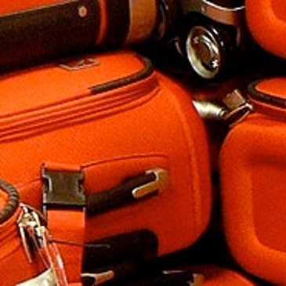
인천공항 3층 하차 위치 — T1·T2 출국장·출입구 번호
서울택시로 인천공항에 도착해 3층에서 짐을 내렸는데, 어느 문으로 들어가야 내 체크인 카운터가 나오는지 몰라 한참 서성인 경험은 생각보다 흔합니다. 이 글은 인천공항 3층
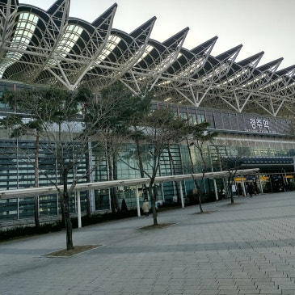
경주 화백컨벤션센터 가는 법 — KTX 2시간·주차 무료, 서울택시 왕복
경주에서 열리는 학회나 전시회 일정을 잡으면, 서울에서 아침 행사에 늦지 않게 도착할 수 있을지부터 계산하게 됩니다. 이 글은 경주화백컨벤션센터(하이코·HICO)까지 KT
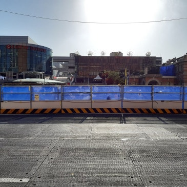
공항철도 자전거 반입 2026 — 접이식만, 큰 짐은 158cm
자전거를 끌고 공항철도 개찰구에 섰는데 안내문에 "휴대승차 기준 변경"이라는 문구만 보이면, 그 자리에서 서울택시를 부를지 고민하게 됩니다. 이 글에서는 2026년 1월
지방출장 고속버스터미널 구분 — 센트럴시티·강남·동서울 노선 확인법
내일 아침 지방출장인데, 예매한 표의 출발지가 '센트럴시티'인지 '서울경부'인지 헷갈리신 적 있으시죠. 고속버스터미널은 이름만 비슷할 뿐 건물도 노선도 완전히 다릅니다.
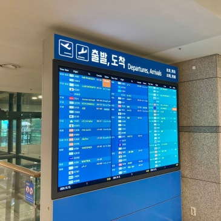
인천공항 기도실 5곳 위치 — T1 24번·T2 231번 24시간 무료
새벽 비행기를 기다리며 조용히 앉아 있을 곳을 찾다가, 공항에 기도실이 있다는 말을 듣고도 정확히 어디인지 몰라 헤매는 분들이 적지 않습니다. 이 글은 인천공항 기도실의
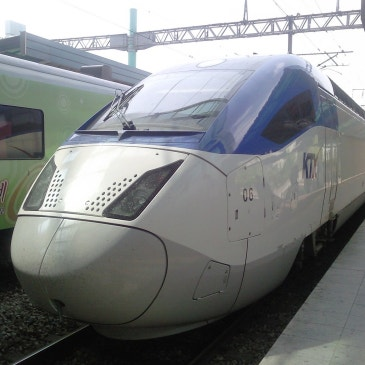
천안아산 지방출장 — KTX 40분·서울택시 왕복 비용 계산
천안·아산으로 하루 출장을 다녀와야 하는데, KTX를 탈지 차량으로 바로 갈지 계산이 서지 않으시죠. 이 글에서는 서울에서 천안아산역까지 KTX 소요 시간과 요금, 역에서
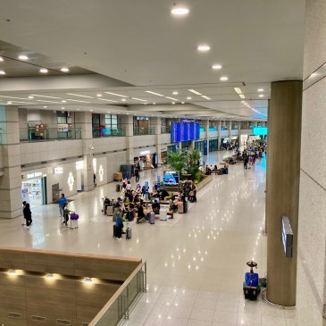
인천공항 화장실·수유실 위치 — T1·T2 게이트별 동선과 서울택시 출발 시각
아이가 갑자기 기저귀를 봐야 한다고 할 때, 탑승구를 찾아 걷다가 화장실부터 찾게 되면 출국 전 일정이 한 번에 꼬입니다. 인천공항 화장실과 수유실(유아휴게실)은 터미널·
골프장 왕복 대절 3시간 vs 5시간 — 서울택시 라운딩 계산
골프 라운딩을 예약하고 나면 차량 문제가 남습니다. 왕복만 부르면 되는지, 하루 대절을 해야 하는지 판단이 서지 않으시죠. 이 글에서는 서울시 대절요금 기준과 18홀 실제

인천공항 편의점 24시간 15곳 — T1·T2 위치와 서울택시 동선
새벽 비행기를 앞두고 물 한 병과 간식, 세면도구를 미처 챙기지 못했다면 출국 전 마음이 먼저 급해집니다. 인천공항 편의점은 터미널과 층, 보안검색 전후로 흩어져 있어 위
인천공항 카카오 T 벤티, 캐리어 5개는 실제로 실릴까 — 예약 전 확인할 것
인천공항 갈 때 제일 먼저 걸리는 게 짐입니다. 28인치 캐리어 두 개만 돼도 일반 세단 트렁크는 금방 찹니다. 가족 여행이나 장기 출장이면 캐리어 서너 개에 기내용 가방
KTX 폭설 지연 — 적설 21cm면 130km, 지방출장 역산
겨울 출장 날짜를 잡아 두었는데 새벽부터 눈이 쏟아지면 가장 먼저 걱정되는 것이 열차 시간입니다. 이 글에서는 코레일이 공개한 적설량별 서행 기준과 지연배상 조건, 그리고
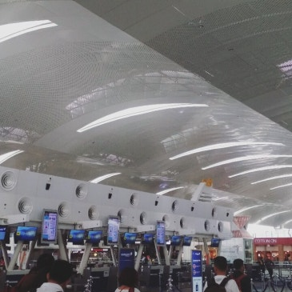
인천공항 약국 위치 — T1·T2 8곳 운영시간과 서울택시 역산
출국 당일 아침에 상비약을 두고 나온 걸 알아차리면 마음이 먼저 급해집니다. 인천공항 약국은 터미널과 층, 보안검색 전후로 흩어져 있어 위치를 모르면 캐리어를 끌고 게이트
수원컨벤션센터 가는 법 — 광교중앙역 35분·주차 500원
광교에서 열리는 전시회와 컨벤션은 서울 강남에서 차로 24km, 서울택시로 44분, 지하철로 35분 거리입니다. 그런데 출장 당일 아침이 되면 어디서 내려 몇 분을 걸어야
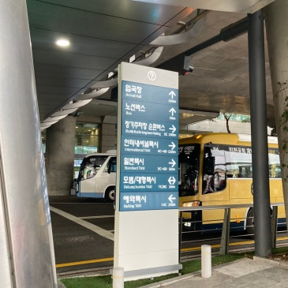
인천공항 흡연실 42곳 — T1·T2·탑승동 위치와 서울택시 역산
출국심사를 통과한 뒤 담배 한 대 피울 곳을 찾지 못해 캐리어를 끌고 게이트를 오가는 분이 많습니다. 인천공항 흡연실은 적지 않지만 보안검색 전과 후가 완전히 갈려 있어,
서울택시 연말 모임 귀가 — 23시 40% 할증과 5인 나누기
12월 모임이 몰리는 금요일 밤, 같은 거리를 달렸는데 지난달보다 요금이 훨씬 많이 나왔다는 이야기를 자주 듣습니다. 원인은 대개 거리가 아니라 출발 시각입니다. 서울 중
인천공항 자동출입국심사 등록 — 나이 기준과 07:00~18:00 창구
출국장 앞에서 줄이 두 갈래로 갈릴 때, 어느 쪽에 서야 하는지 망설이신 적 있으시죠. 이 글에서는 인천공항 자동출입국심사대를 바로 쓸 수 있는 사람과 사전등록이 필요한
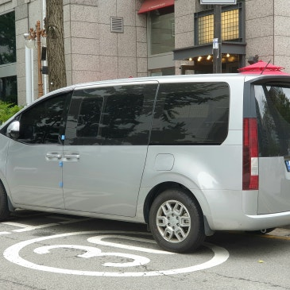
골프장 도착 40분 전 — 클럽하우스 동선과 서울택시 픽업 시각
겨울 새벽 티오프를 잡아 두고 "몇 시에 출발해야 하나"에서 멈추는 분들이 많습니다. 이 글에서는 골프장 도착 기준과 클럽하우스 동선, 서울택시로 이동할 때 픽업 시각을
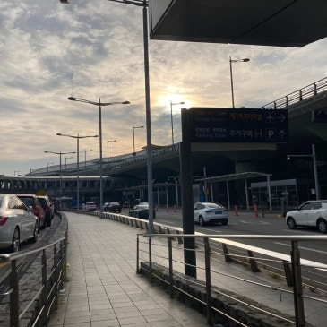
인천공항 유심·와이파이 — T1·T2 24시간 로밍센터, 서울택시 픽업
새벽 도착편에서 유심을 사려고 로밍센터를 찾았는데 셔터가 내려져 있었다면, 그날 밤은 숙소 연락도 서울택시 호출도 쉽지 않습니다. 이 글은 인천국제공항공사 시설 안내를 기
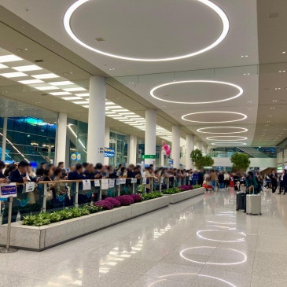
인천공항 환승 8시간 — 환승호텔 4층, 샤워실은 23시 마감
해외로 갈 때 인천공항에서 갈아타는 일정이 잡히면, 비는 시간을 어디서 보낼지가 먼저 고민됩니다. 이 글은 인천공항 환승 대기 시간대별로 쓸 수 있는 시설과, 예약 전에
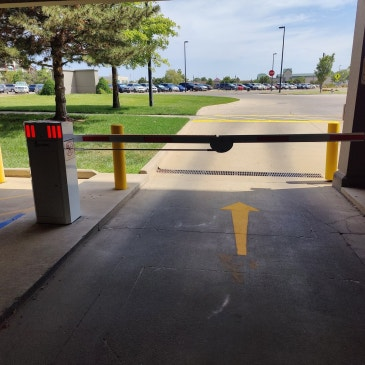
김포공항 국내선 주차 — 평일 10시간 2만원, 서울택시와 비교
김포공항에서 제주·부산으로 떠날 때 차를 가져갈지, 서울택시를 부를지 고민되는 순간이 있습니다. 짐이 많으면 차가 편하지만, 2박3일 주차요금이 택시 왕복값을 넘어서는 구
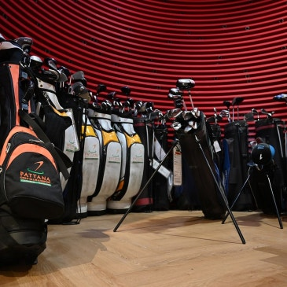
겨울 골프장 이동 — 일출 07:11, 서리 지연과 서울택시 역산
11월 중순부터 겨울 골프장 이동은 새벽 5시 출발로 시작됩니다. 그런데 그 시각 서울은 아직 밤이고, 도로는 하루 중 가장 차갑습니다. 결론부터 말하면 겨울 골프장 이동

인천공항 택스리펀 — 1만5천원부터, 22시 마감 서울택시 역산
외국인 손님이나 해외에 사는 가족을 공항에 배웅하다 보면, 세금 환급을 받으려고 줄을 서다 시간이 모자라 그냥 포기하는 경우를 자주 봅니다. 택스리펀은 '어디서 받느냐'보
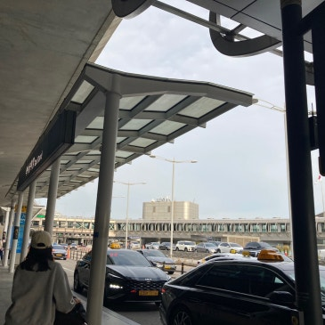
인천공항 셔틀버스 5개 노선 — T1·T2 무료, 막차는 23:20
인천공항에서 1터미널과 2터미널을 헷갈려 반대편에 내리는 일은 흔합니다. 장기주차장에 차를 세워두고 터미널까지 짐을 끌고 걷다 지치는 경우도 있습니다. 두 상황 모두 공항
인천공항 장기주차장 7일 6만3천원 — 서울택시 왕복과 비교
1주일 해외 출장이나 휴가를 앞두고 가장 많이 나오는 질문이 "차를 공항에 두고 가면 주차비가 얼마나 나오나"입니다. 인천국제공항공사 공식 주차요금표 기준으로 7일을 세우
김포공항→인천공항 이동 — 공항철도 37분 vs 서울택시 40분
국내선으로 김포에 내려 국제선을 타러 인천공항으로 넘어가야 하는 날, 두 공항 사이가 얼마나 걸리는지 가늠이 안 돼 일정을 지나치게 넉넉히 잡거나 반대로 촉박하게 잡는 분
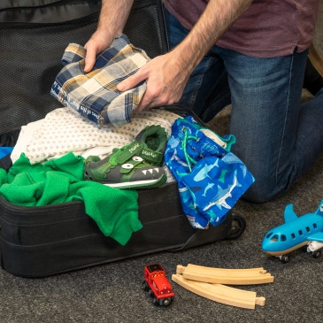
인천공항 입국 세관 신고 — 800달러 면세한도, 자진신고 30% 감면
해외에서 산 물건을 캐리어에 넣고 입국장 세관 앞에 서면, 신고해야 하는지 애매해서 발걸음이 멈추는 경우가 많습니다. 세관을 통과한 뒤 서울택시를 찾아 나서는 귀국길은 짐
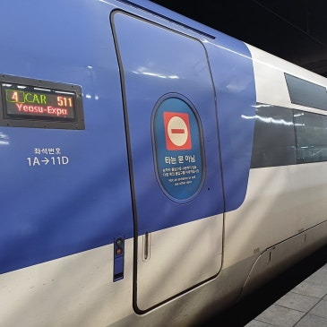
포항 지방출장 — KTX 2시간 15분, 서울택시 왕복 계산
포항 출장은 이동 시간이 일정의 절반을 차지합니다. 서울역에서 KTX로 2시간 20분 안팎, 고속버스로 3시간 40분, 서울택시로는 왕복 주행만 7시간 안팎입니다. 이 글
인천공항 게이트 마감 10분 전 — 체크인 60분·서울택시 역산
비행기 출발 시각만 보고 공항으로 향했다가 탑승구 문이 닫혀 발이 묶이는 경우가 있습니다. 체크인을 마쳤어도 탑승구 마감 시각을 넘기면 탑승이 거부될 수 있는데, 이 마감
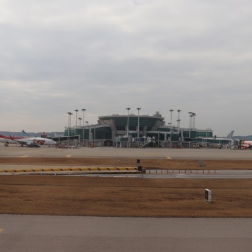
반려동물 공항 이동 — 기내 7kg·케이지 19cm, 서울택시 예약
반려동물과 함께 비행기를 타려면 공항에 도착하기 전에 끝내야 할 절차가 있습니다. 항공사 운송 승인을 받지 않으면 공항 카운터에서 탑승 자체가 거절될 수 있습니다. 이 글
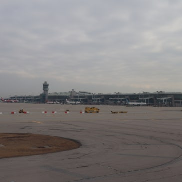
인천공항 면세품 인도장 — T1 43번·T2 227번, 1~2시간 전 수령
비행기 출발이 두 시간 남았는데 면세품을 아직 못 받으셨나요. 인터넷면세점에서 산 물건은 공항 인도장에서 직접 받아야 하고, 위치를 모르면 출국장을 한 바퀴 돌게 됩니다.